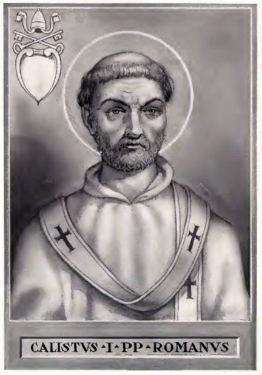

St. Zephyrinus
St. Zephyrinus (198-217) readmitted to the Church a repentant bishop, Natalis, the head of a sect which had been excommunicated by Pope Victor for holding heretical doctrines concerning the Trinity.
McSorley, Joseph. An Outline History of the Church by Centuries (from St. Peter to Pius XII). 2nd Ed. 1944.